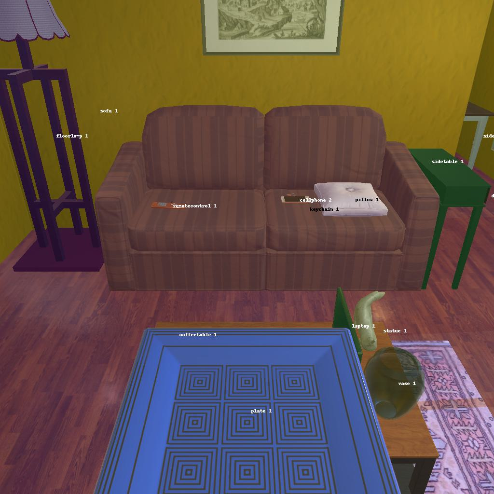

---------------------------------------------------------task: 3---------------------------------------------------------
--------------------------------------------------------------------------------------------------------------------------------------------------------------------
--------------------------------------------------------------------------------------------------------------------------------------------------------------------
Step:--------------------------------------------------------------------------9-------------------------------------------------------------------------------
----------------------------------------
VLM Prompt:
Image1:
**Instruction**
1. Analyze the provided image to identify all visible household objects, focusing on those relevant to the task description "look at plate under the floorlamp."
2. Use the analysis of the image and the task hint "The agent must find an object of the desired type, locate and turn on a light source with the desired object in-hand." to answer the question: what is the most reasonable action in the choices for the task description "look at plate under the floorlamp"?
4. Decide and write the answer using the template: The answer is: (i): , where i is the real number. If there is no desired object in the image, search every place based on **Initial Observation** to find the object. And if no one is exactly correct, choose a similar answer.
**Initial Observation**
You are in the middle of a room. Looking quickly around you, you can see armchair (1), garbagecan (1), tvstand (1), shelf (1-5), sofa (1), coffeetable (1), sidetable (1-2), drawer (1)
**Answer Choices**
(1): go to armchair 1
(2): go to garbagecan 1
(3): go to tvstand 1
(4): go to shelf 1
(5): go to shelf 2
(6): go to sofa 1
(7): go to sidetable 1
(8): go to sidetable 2
(9): go to drawer 1
(10): go to shelf 3
(11): go to shelf 4
(12): go to shelf 5
(13): put plate 1 in/on coffeetable 1
(14): examine coffeetable 1
**Answer**
Let's think step by step by following the instructions.
----------------------------------------
----------------------------------------
Original Response:
First, we identify all visible household objects relevant to the task description "look at plate under the floorlamp." We can see plate 1 on coffeetable 1 and floorlamp 1 next to the sofa.
According to the task hint, the agent must find the object of the desired type, which is plate 1, and turn on a light source, which is floorlamp 1, with the desired object in hand.
Since the plate is already on the coffeetable and not under the floorlamp, the most reasonable action would be to first pick up the plate. However, there is no option to pick up the plate. The closest action that involves the plate is to examine the coffeetable, where the plate is located. Therefore, the answer is:
The answer is: (14): examine coffeetable 1
This action will bring the agent closer to the plate, allowing for the possibility of picking it up in a subsequent action, and eventually completing the task of looking at it under the floorlamp.
----------------------------------------
----------------------------------------
>>> Refine Original VLM Response and Get Pure Action: examine coffeetable 1
This action will bring the agent closer to the plate, allowing for the possibility of picking it up in a subsequent action, and eventually completing the task of looking at it under the floorlamp
----------------------------------------
-----------------------------------------------------------------
Running time: 43.71196174621582 seconds
Total Money: 1.0070200000000002
-----------------------------------------------------------------
-----------------------------------------------------------------
Text Observation:Nothing happens.
-----------------------------------------------------------------
UNSUCCEED